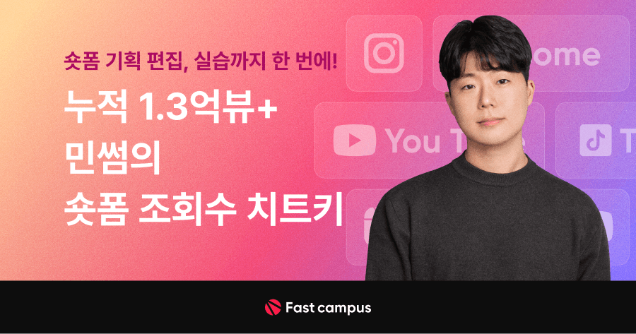
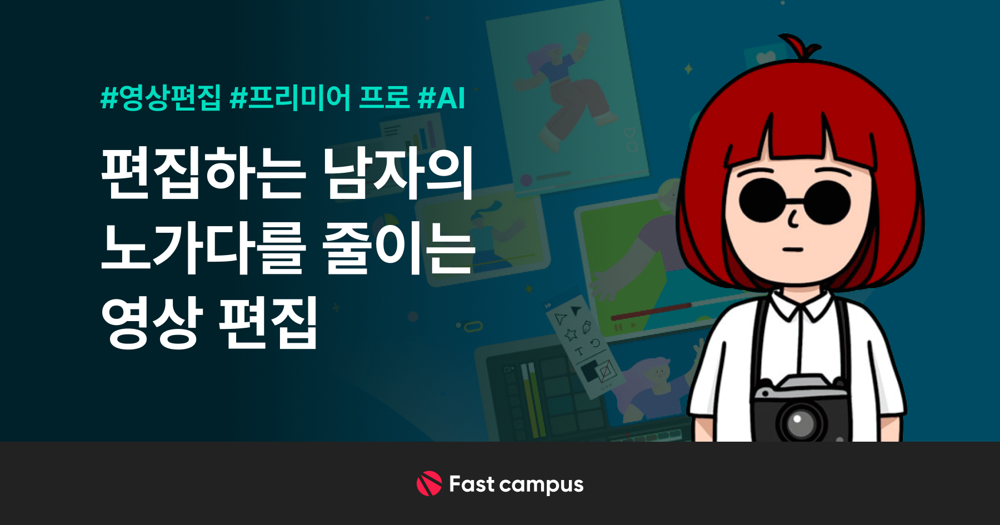
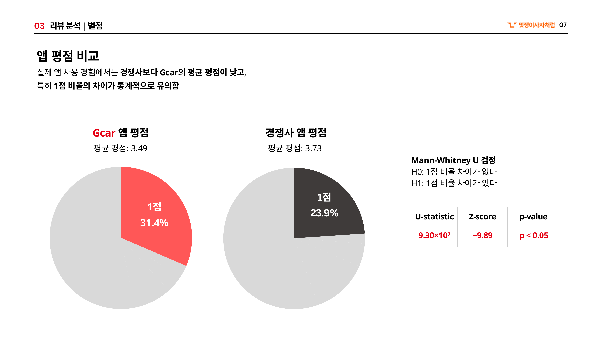
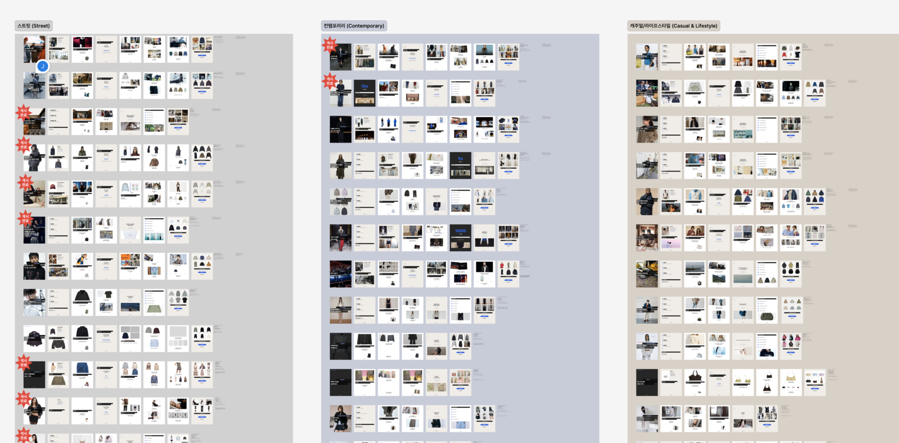
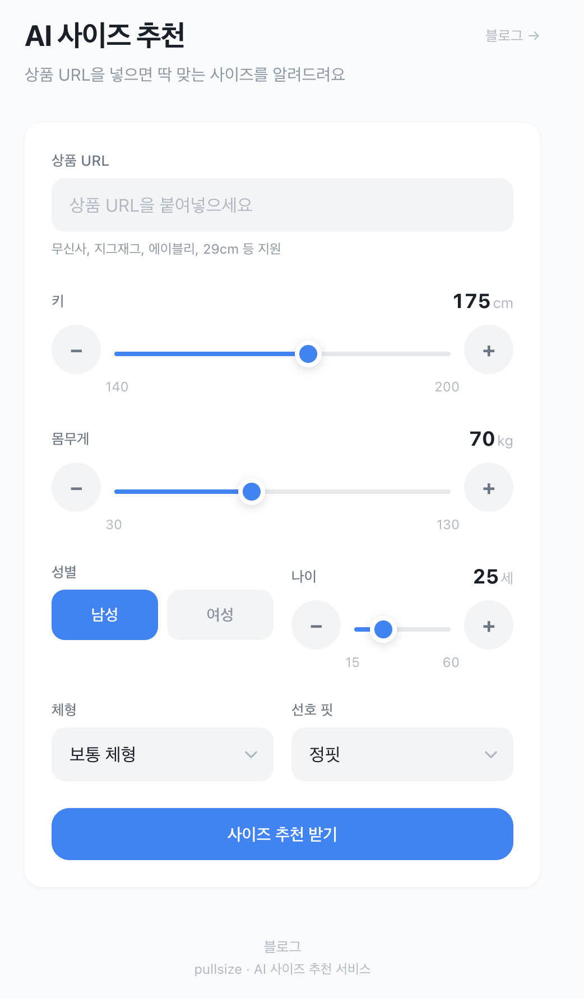
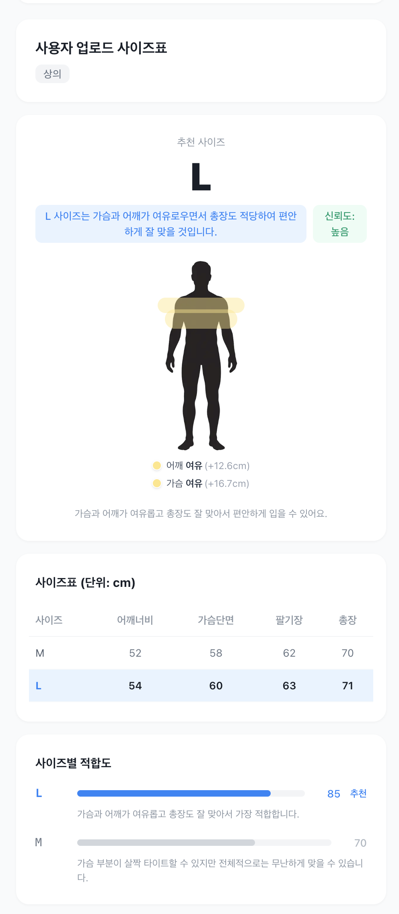
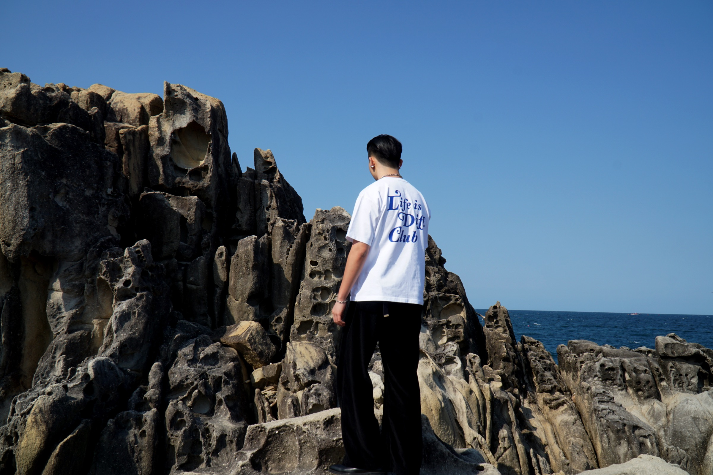
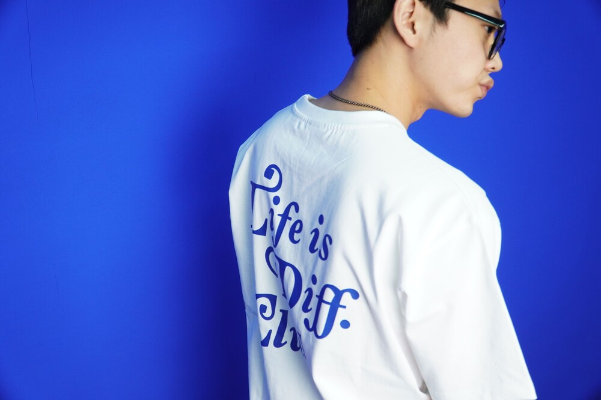
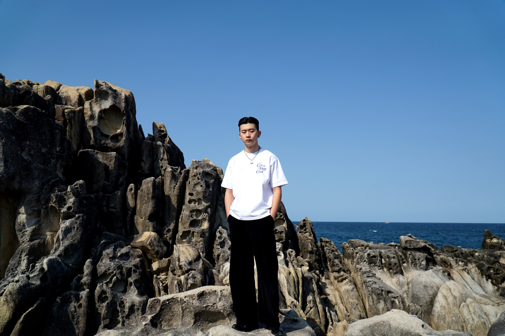
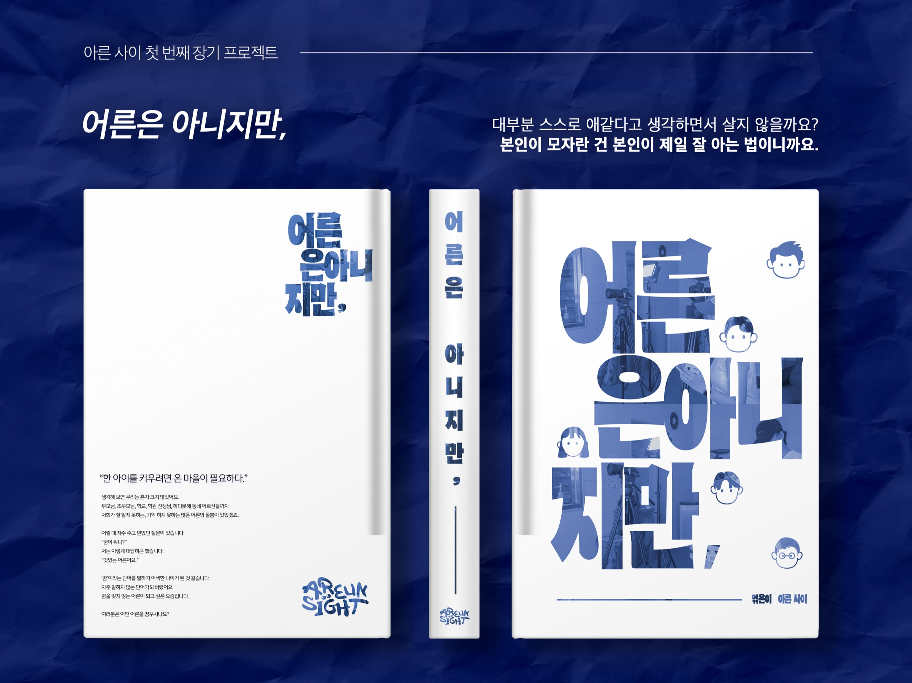
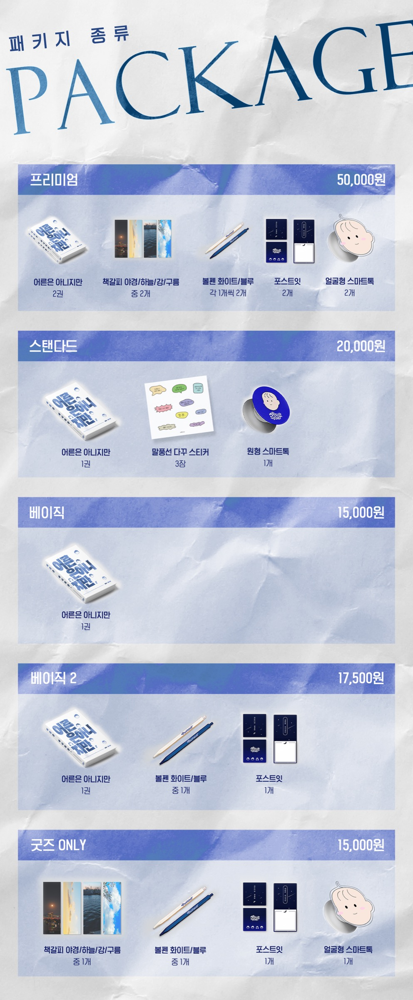
사용자 말·리뷰·데이터를 기획 근거로 바꾸고, 서비스 흐름으로 검증합니다.
리뷰, 문의, 현장 경험을 모아 문제의 시작점을 찾고 실행 가능한 흐름으로 바꿉니다.
문제정의, 구조화, 실행, 결과가 보이는 프로젝트만 선별했습니다.
부정 리뷰가 반복됐으나 핵심 이탈 원인을 구조적으로 파악한 데이터가 없었다.
강사 경험 중심 기획을 수강생 니즈 중심의 상품 구조로 바꿨습니다.
브랜드마다 다른 실측 기준 때문에 생기는 구매 전 불안을 줄이는 AI 추천 MVP입니다.
반복 제작 과정을 자동화하되, 기획자의 판단이 필요한 지점은 QA 게이트로 남겼습니다.
상품 기획부터 팝업 운영까지, 브랜드 전 과정을 3인 팀으로 운영했습니다.
영상 단독 소비에서 벗어나 도서·SNS·크라우드펀딩으로 포맷을 넓혔습니다.
서비스 기획자는 기능을 늘리는 사람이 아니라, 사용자가 이탈하는 지점을 발견하고 더 나은 흐름으로 바꾸는 사람이라고 생각합니다.
저는 데이터와 사용자 경험을 함께 보며 문제를 구조화하고, 실제로 작동하는 서비스 흐름으로 바꾸는 일을 해왔습니다.
서정일